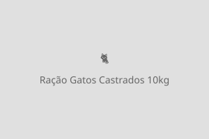
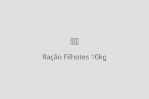

Rações Não Perecíveis
Alimentação de qualidade para manter seu pet saudável e bem nutrido!
Ração Premium Cães Adultos — 15kg

Descrição: Ração premium para cães adultos de todas as raças. Formulação balanceada com proteínas de alta qualidade, vitaminas e minerais essenciais. Auxilia na saúde da pele, pelagem brilhante e sistema imunológico fortalecido. Não contém corantes artificiais.
Peso: 15kg
Indicação: Cães adultos de todas as raças
Valor: R$ 189,90
Ração Super Premium Gatos Castrados — 10kg

Descrição: Ração super premium desenvolvida especialmente para gatos castrados. Fórmula com controle de peso e prevenção de cálculos urinários. Rica em taurina e ômega 3 e 6, proporcionando uma alimentação completa e saudável. Sabor frango.
Peso: 10kg
Indicação: Gatos castrados adultos
Valor: R$ 159,90
Ração Premium Filhotes Cães — 10kg

Descrição: Ração premium especial para filhotes de cães de porte pequeno e médio. Enriquecida com DHA para o desenvolvimento cerebral e visual. Grãos pequenos e fáceis de mastigar, ideais para filhotes a partir de 2 meses. Sabor carne e cereais.
Peso: 10kg
Indicação: Filhotes de cães (2 a 12 meses)
Valor: R$ 139,90